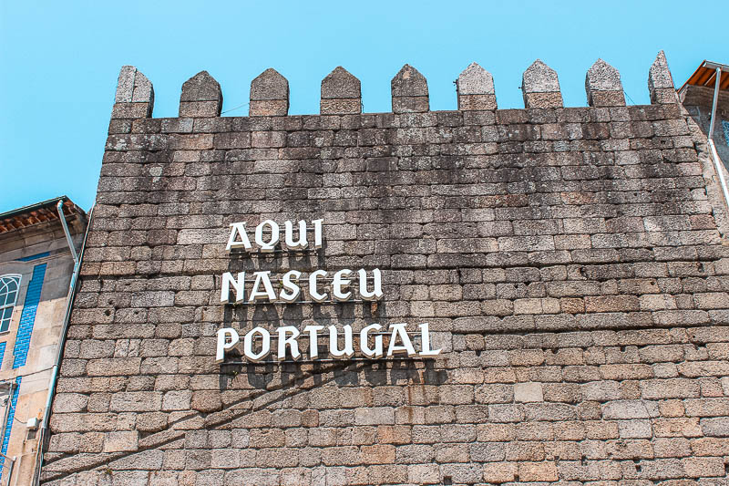

|
Guimarães, berço de Portugal, é uma cidade repleta de história e tradição. Localizada no norte do país, esta encantadora cidade desempenhou
um papel fundamental no estabelecimento da nação portuguesa. O seu centro histórico, classificado como Património Mundial pela UNESCO, é um
testemunho vivo da rica herança cultural do país.A Igreja de São Miguel, com a sua arquitetura imponente e detalhes intricados, é outro ponto
de interesse que reflete a devoção religiosa e a mestria arquitetónica da época. Além do seu valor histórico, Guimarães é uma cidade que
abraça a modernidade sem esquecer as suas raízes. Os seus habitantes, conhecidos pela hospitalidade, mantêm viva a tradição, enquanto as instituições
culturais e educacionais promovem a inovação e a criatividade.Explorar Guimarães é como mergulhar num livro de história vivo, onde cada rua conta uma
história e cada edifício é um capítulo. Esta cidade, com o seu passado glorioso e presente vibrante, continua a ser um símbolo orgulhoso da identidade
portuguesa. |
 |